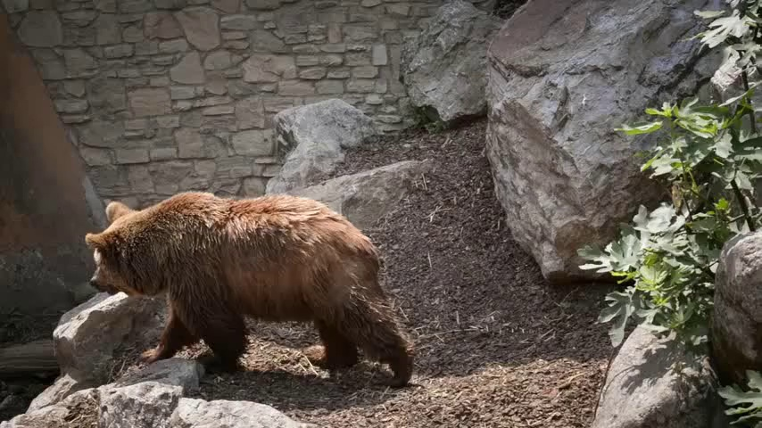
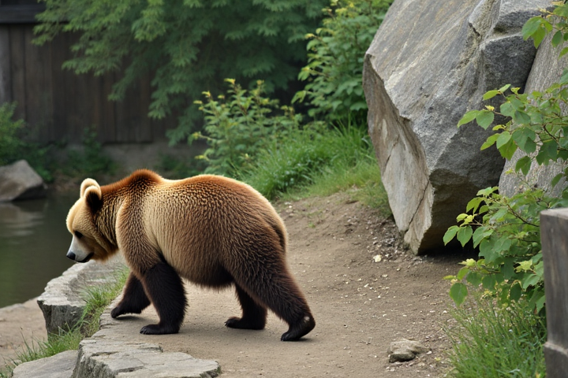

bench-v3 davis · bear walks to the left · T=82 truncate path · D_target = 2.04 s · GT 854×480
| Tem-Con ↑ | Subj-Cons ↑ | |
|---|---|---|
| GT (reference) | 0.9785 | 0.9626 |
| DaS (no repaint, legacy suffix) | 0.9787+0.0002 vs GT | 0.9552−0.0074 vs GT |
| DaS + --repaint (FLUX, new suffix) | 0.9791+0.0006 vs GT | 0.9669+0.0043 vs GT |
| Sora 2 (new suffix) | 0.9740−0.0045 vs GT | 0.9659+0.0033 vs GT |

img_cond, Sora input_reference
img_cond · depth-anything-v2 + FLUX.1-Depth-dev, 720×480input_reference vs Sora frame[0] left: what we uploaded · right: Sora's frame 0 (19% pixel-diff — not strict-frame I2V)